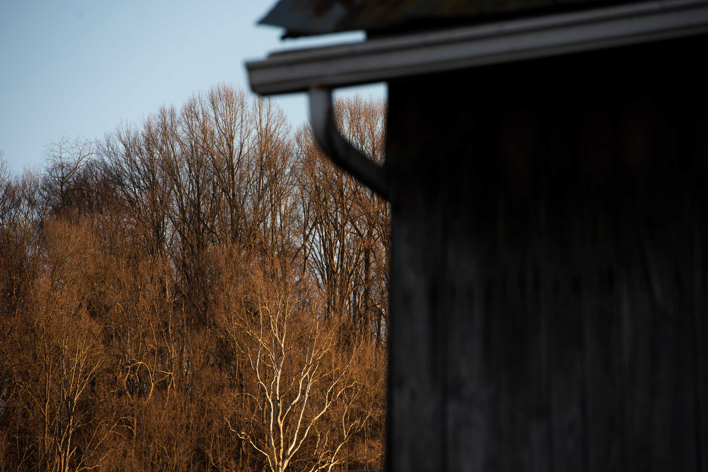
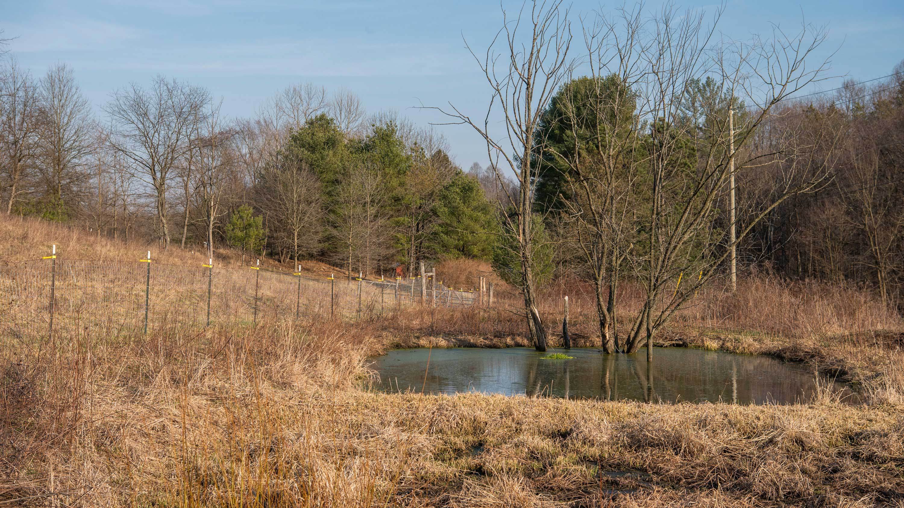
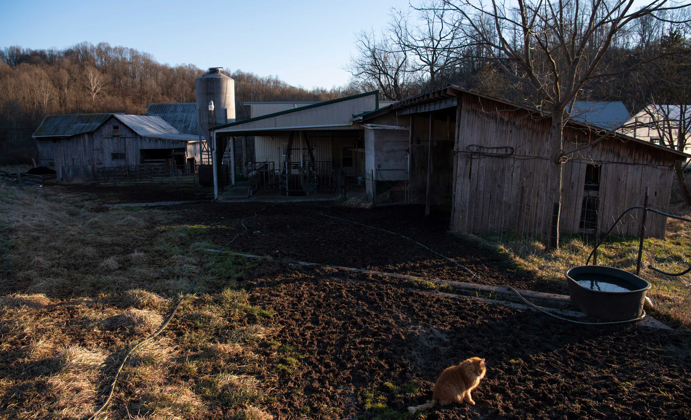
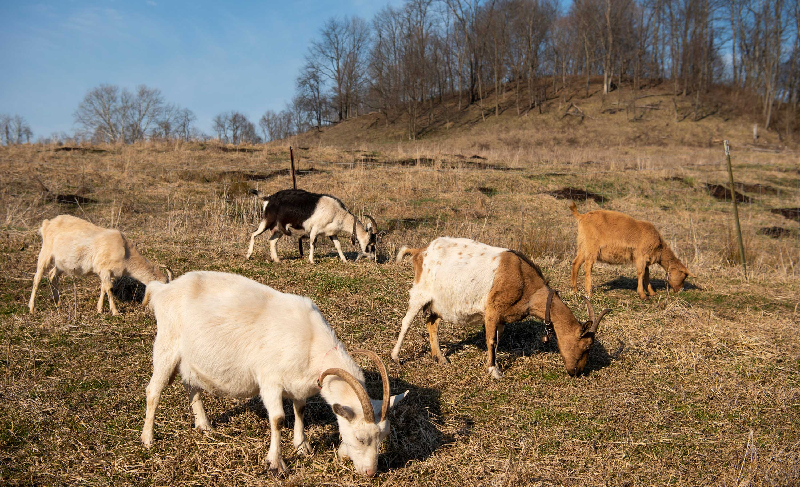
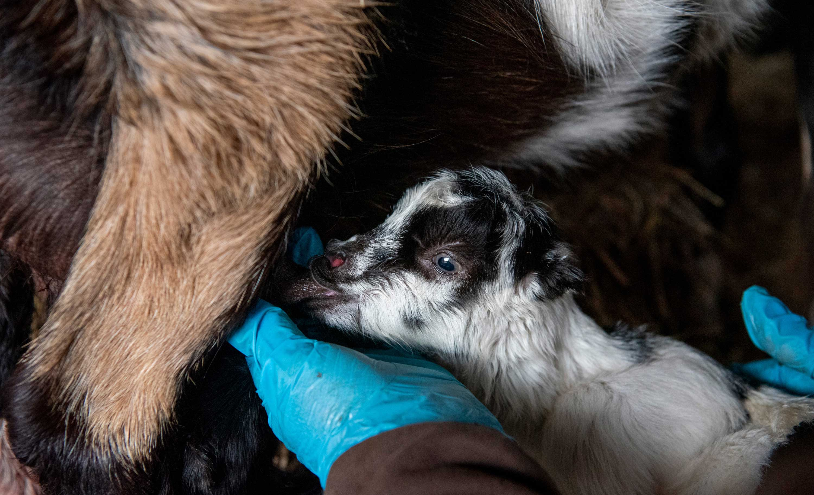
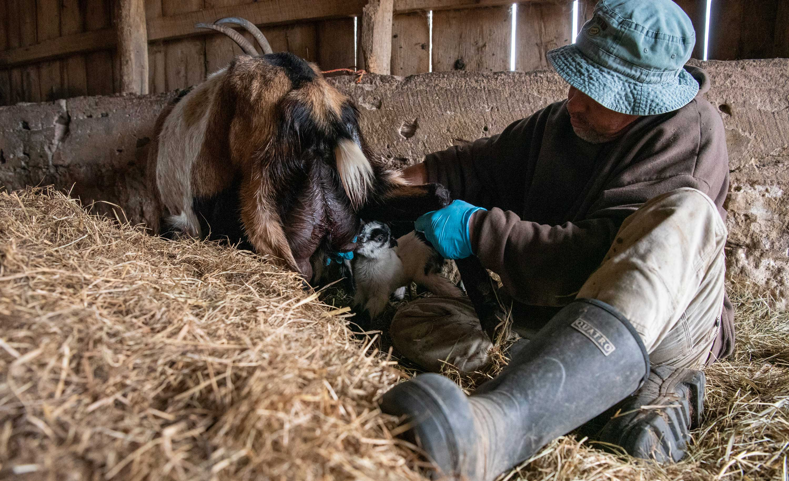

Chris Chmiel is a co-owner of Integration Acres, a farm in Albany, Ohio. He co-owns the farm with his wife, Michelle Gorman.
Founded in 1996, Integration Acres is a farmstead creamery and the one of largest pawpaw processors in the world.

Integration Acres near Albany, OH, on Feb. 27, 2022.
Goats graze around the goat barn at Integration Acres near Albany, OH, on March 5, 2022.
Chmiel discovered his passion for farming in his childhood, watching his grandfather tend to gardens, orchards, and vineyards when he was young. At Ohio University, he studied sustainable agriculture and botany. In 1996, he founded Integration Acres. He started growing pawpaws, the largest edible fruit native to the United States. They are found in the Eastern, Southern, and Midwestern regions of the U.S., but they are quite common in Appalachian Ohio. Today, Integration Acres is home to a high-tunnel greenhouse, a handful of barn cats, and over 50 goats. The farm produces all year long; goat cheese, pawpaws seedlings and related products, mushrooms, and a various assortment of vegetables.
In both his goat husbandry and pawpaw farming, the cycles of nature inform much of Chmiel’s work. One of the main features of Integration Acres’ sustainable design involves silvopasturalism, which is defined by the USDA as the “deliberate integration of trees and grazing livestock operations on the same land”. Chmiel has found that goats do not eat pawpaw trees, but they graze on the weeds around them, fertilize the soil, and even provide flies to pollinate their flowers. “It’s a beautiful system,” said Chmiel.

This marshy section of land, fenced off from any curious goats, is a water-treatment system. The natural filtration system was paid for an installed by federal grants and programs. As a county commissioner, Chmiel is well-versed in the resources available to small farms and utilizes them creatively to make his farm as sustainable as possible.

A farm cat sits near the milking barn at Integration Acres, near Albany, OH, on March 6, 2022.

Goats graze in a field on Integration Acres near Albany, OH, on March 5, 2022.
He also loves working with native plants because they are more adapted to this environment, meaning these native plants use significantly less energy than plants in “a traditional agricultural system”. He grows black walnuts, spicebush, and pawpaws on his farm, and sells goods with native ingredients often at his farmer’s market booth. However, not much can compare to his love for the pawpaw. He is rarely seen without pawpaw-related attire, including a signature green felt hat with a yellow pawpaw patch. “We're blessed in this region with literally millions of pawpaw trees,” Chmiel said. “I've put years and decades of my life into pawpaws.”
Pawpaw seeds sit in a massive mound beside one of the barns at Integration Acres. These seeds are accumulated from several pawpaw crops in years past, when there were more pawpaws produced than Chris Chmiel knew what to do with. In recent years, a disease has greatly reduced the number of pawpaws produced in Southeast Ohio.
Sadly, in recent years, a disease has wiped out a lot of pawpaw trees in the southern Ohio region, leaving pawpaw production at marginal levels. However, the other aspects of his business, such as his goats, allow Chmiel to stay profitable. “It's like a resiliency thing,” Chmiel said. “You just don't want to put all your eggs in one basket.” Chmiel also tries to avoid the costs associated with waste, such as mixing ground shells from his black walnuts as a soil additive. “It's part of being profitable. It's part of being ethical. It's part of just my values.”
Chmiel’s resourcefulness is not only telling of his personality, but is also necessary for his farm’s continued growth. Over the last few decades, many small farms have gone out of business across the nation. Southeast Ohio’s farms have seen this pattern as well; family-owned farms make up 97 percent of farms in Athens County. “The guys that would sell their milk next door to us, they would sell their milk to some company, like Borden’s that was in Marietta or the Milk Marketing Cooperative, but a lot of those things are disappearing,” said Chmiel.
“We’re trying to keep farming alive.”
Rising production costs and steep competition from corporate farms make it difficult to live off of farm income alone. According to the USDA, over half of the average small family farm’s income came from off-farm sources in 2019. Chmiel is no exception. When he’s not on his farm, he works as an Athens County Commissioner. He was first elected in 2012, and he uses his position to push for sustainability in local government. “I have a sphere of influence, and a sphere of impact, that's bigger than what I can do on a personal level,” said Chmiel.
Despite the challenges small farmers face nationally, Chmiel believes that Athens County is an amazing place to run a farmstead business. “If it wasn't for that, you know, community of local food support, none of us little people would be here,” Chmiel said. This support comes from the Athens Farmer’s Market, and stores and restaurants that participate in the 30-Mile Meal Project. This program is an Athens County initiative that connects restaurants, businesses, and non-profits to local farms that are within 30 miles of their location. The community support for local businesses and sustainable food systems allows Integration Acres to thrive, and Chmiel contributes to that community in every way he can. He helped found the Pawpaw Festival in 1999, which has evolved into an annual three-day event of local vendors, live music, and community gathering. Thousands of people come to be educated about and celebrate the pawpaw fruit.
Chmiel constantly comes up with new ways to bring people together to learn about something he loves. This year, Chmiel soft-launched the first annual Goat Party at Integration Acres. The over 50 guests walked around with the frolicking goats, ate goat curry, and participated in a milking demonstration. There was even a goat tai chi session. Chmiel’s neighbors, farmer’s market customers, fellow Pawpaw Festival organizers, and other friends came together to support him.
A pregnant goat at Integration Acres near Albany, OH, on March 5, 2022.

Chris Chmiel assists a newborn baby goat’s feeding on March 6, 2022. The mother goat, Foxy, had triplets, and two of her newborn kids were struggling to latch on their own. Chmiel says that the first few feedings are crucial; the milk produced during this newborn window “is magic”. It contains nutrients and antibodies that cannot be replicated by formula. If a kid cannot latch onto a teet within the first few days, it will likely not survive.

Chris Chmiel assists a newborn baby goat’s feeding on March 6, 2022. The mother goat, Foxy, had triplets, and two of her newborn kids were struggling to latch on their own. Chmiel says that the first few feedings are crucial; the milk produced during this newborn window “is magic”. It contains nutrients and antibodies that cannot be replicated by formula. If a kid cannot latch onto a teet within the first few days, it will likely not survive.
Ultimately, Chmiel works hard to create a reality he wants to see in the world. The many roles he fills may seem like unlikely pairings, but he uses all of them to pursue the same goals: sustainable food systems, a tight-knit community, and a fulfilling lifestyle. “I could probably be doing a million other things, making more money, blah, blah, blah, but I like being on the farm. I like being outside,” Chmiel said. “It's very…soothing to my soul.”
The door on the high tunnel greenhouse has a sticker from the 30-Mile Meal program on March 6, 2022. The 30 Mile Meal program is a local food initiative that connects vendors and restaurants to local farms within 30 miles of them. Integration Acres is one of 125 businesses partnered in this program. Chmiel delivers his goods to places in Athens such as Kindred Market, Jackie O’s, and Village Bakery regularly.